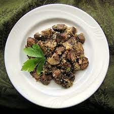

Provencale Mushrooms

recipe stolen from FANCLUBMEDIA and relevant to the region of stage 11 of the 2021 TDF set in,
surprisingly, provence. The stage was won by, unsurprisingly, Wout van Aert who attacked on the 2nd acscent of Mont Ventoux
serves 2
Ingredients
- 2 Large Flat mushrooms
- 250g Chestnut Mushrooms (sliced)
- 2 handfuls of cherry tomatoes
- 2 small peppers
- 3 cloves of garlic
- 400g of spinach
- 3tbsp of breadcrumbs
- Herbes of Provence
Instructions
- Preheat the oven to 180c
- In a small frying pan heat some oil, and chop one clove of garlic and heat gently.
Add the tomatoes and cook for 5 minutes
- Halve and dessen the peppers. Spoon in some of the tomatoes
- Put the remaining tomato mix into the flat mushrooms and then put the breadcrumbs over the top.
Sprinkle Herbes de provence into the breadcrumbs as well. Drizzle olive oil over the top.
Bake in the oven for 30 min.
- Heat some more oil in a large flat based pan, and add a garlic clove, chopped. Then add scliced chestnut mushrooms and cover in the hot oil.
Cook for around 10 minutes, scattering some tyhme over the top for the final 5 minutes.
- Blance the Spinach with a clove of garlic and 2 tbsp of water for a couple of minutes and serve.